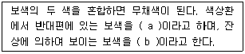
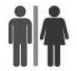

시각디자인산업기사 (2010-05-09 기출문제)
1과목: 색채학
1. 상영 중인 영화관에 들어서서 좀 시간이 지나면 어두운 주위의 물체를 식별할 수 있다. 이는 눈의 어떤 순응상태를 말하는가?
- 명순응
- 암순응
- 색순응
- 무채순응
(정답률: 알수없음)

2. 색채관리의 진행순서 중 옳은 것은?
- 색의 설정 → 발색 및 착색 → 검사 → 판매
- 색의 설정 → 검사 → 발색 및 착색 → 판매
- 발색 및 착색 → 검사 →색의 설정 → 판매
- 발색 및 착색 → 검사 → 판매 → 색의 설정
(정답률: 알수없음)
3. 적색에 검정색을 혼합했을 때 채도의 차이는?
- 높아진다.
- 낮아진다.
- 혼합하기 전과 같다.
- 시간이 갈수록 높아진다.
(정답률: 100%)
4. 먼셀 색체계에서 시각적 중립점인 N5의 물리학적인 반사율을 옳게 나타낸 것은?
- 3.1 %
- 19.8 %
- 43.1 %
- 78.7%
(정답률: 40%)
5. 같은 물체의 색이라도 조명에 따라 색이 달라져 보이는 현상은?
- 작열현상
- 조건등색
- 연색성
- 표준광
(정답률: 47%)
6. 수술실의 의사들이 초록색의 가운을 입는 이유는 색의 어떤 현상 때문인가?
- 색의 명도대비
- 보색잔상
- 색의 면적대비
- 색의 동화현상
(정답률: 알수없음)
7. 색의 중량감에 관한 설명 중 잘못된 것은?
- 명도가 낮은 것은 무겁게 느껴진다.
- 명도 보다는 색상의 차이가 크게 좌우된다.
- 채도 보다는 명도의 차이가 크게 좌우된다.
- 명도가 높은 것은 가볍게 느껴진다.
(정답률: 알수없음)
8. 오스트발트 표색계의 기본 4색이 아닌 것은?
- yellow
- red
- seagreen
- purple
(정답률: 53%)
9. 먼셀 색채 조화의 원리와 거리가 먼 것은?
- 동일색상조화시 명도 및 채도에 관하여 정연한 가격으로 했을 때 조화된다.
- 명도는 같으나 채도가 다른 반대색끼리는 약한 채도에 넓이를 주고 강한 채도에 작은 면적을 주면 조화된다.
- 채도가 같고 명도가 다른 반대색끼리는 회색척도에 관하여 정연한 간격으로 했을 때 조화된다.
- 회색은 회색척도의 5개 단계에 관하여 정연하고 고른 간격으로 했을 때 잘 조화된다.
(정답률: 36%)
10. "두 색은 이들을 혼색시킬 때 완전한 무채색이 되는 겨우에만 잘 조화된다."라고 주장한 사람은?
- 럼포드(Rumford)
- 아이젠크(H,J. Eysenck)
- 버크호프(G.C. Birkhoff)
- 슈브럴(M.E, Chevreul)
(정답률: 알수없음)
11. 스펙트럼은 빛의 어떠한 현상에 의한 것인가?
- 흡수
- 굴절
- 투과
- 흥분
(정답률: 79%)
12. 다음 중 밝고 경쾌한 음과 연관된 색은?
- 오렌지, 노랑
- 회색, 검정
- 에메랄드 그린, 남색
- 무채색, 탁색
(정답률: 알수없음)
13. 한국의 전통색의 상징에 대한 설명으로 옳은 것은?
- 적색은 남쪽을 상징한다.
- 흰색은 중앙을 상징한다.
- 황색은 동쪽을 상징한다.
- 청색은 북쪽을 상징한다.
(정답률: 73%)
14. 색채계획에 있어 효과적인 색 지정을 하기 위하여 디자이너가 갖추어야 할 능력으로 거리가 먼 것은?
- 색채변별능력
- 색채조색능력
- 색채구성능력
- 심리조사능력
(정답률: 알수없음)
15. 다음 ( )안에 알맞은 것은?

- a : 회전보색, b : 잔상보색
- a : 물리보색, b : 심리보색
- a : 심리보색, b : 물리보색
- a : 잔상보색, b : 회전보색
(정답률: 20%)
16. 다음 색체계에 대한 설명으로 옳은 것은?
- 해리스(Moses Harris)의 색체계는 혼합된 합성물의 써클을 기본으로 하여 가법혼색을 설명하였다.
- 룽게(Philipp Otto Runge)는 빨강, 파랑, 노랑을 기본으로 하는 이상적인 COLOR-SOLID를 구성하였다.
- 슈브럴(Michel Eugene Chevreul)은 삼각형 모양의 색상환으로 동시대비를 설명하였다.
- 베졸트(Willhelm von Bezold)는 심리적인 반대색설을 대표하는 색상환으로 잔상색을 설명하였다.
(정답률: 알수없음)
17. 색의 온도감을 좌우하는 가장 큰 요소는?
- 색상
- 명도
- 채도
- 면적
(정답률: 70%)
18. 먼셀 기호 '2.5B 4/8에서 명도 값은?
- 2.5
- 4
- 8
- 12
(정답률: 85%)
19. 다음 중 채도가 가장 높은 색상은?
- 노랑
- 파랑
- 보라
- 초록
(정답률: 알수없음)
20. 다음 중 문, 스펜서의 색채 조화 이론과 관련이 있는 것은?
- 조화와 부조화
- 질서의 원리
- 친숙의 원리
- 윤성조화
(정답률: 알수없음)
2과목: 인쇄 및 사진기법
21. 주로 상업사진 촬영용으로 많이 사용되는 대형 카메라로서 왜곡이나 시차(視差)를 없애기 위해서 사용되는 카메라는?
- 110mm 카메라
- 135mm 카메라
- 뷰(view) 카메라
- 파노라마 카메라
(정답률: 알수없음)
22. 컬러 네거티브로부터 인화한 결과 밝게 인화되었다면 가장 큰 이유는?
- 인화시 확대기에서 노출량이 많았다.
- 인화시 확대기에서 노출량이 적었다.
- 현상시 필름의 표백, 정착시간이 연장되었다.
- 현상시 필름의 표백, 정착시간이 단축되었다.
(정답률: 알수없음)
23. 사용하는 필름의 고유감도보다 실제 찰영 감도를 높게 촬영한 후, 이로 인한 노출부족에 대하여 현상시간을 연장하여 보상함으로서 필름의 감도를 높이면서도 현상은 적절히 되도록 하는 현상 방법은?
- 보력현상
- 감력현상
- 증감현상
- 감감현상
(정답률: 알수없음)
24. 촬영시 동일한 감광도에서 ND4 필터를 사용하여 f/8, 1/15초로 촬영하였다. 다음 중 동일한 노출값에 해당되는 것은?
- ND2 필터로 f/8, 1/30초
- ND8 필터로 f/5.6, 1/60초
- 필터없이 f/8, 1/15초
- UV필터로 F/8, 1/15초
(정답률: 알수없음)
25. 다음 중 일반적으로 잉크의 점도(poise)가 가장 낮은 것은?
- 플렉소용 잉크
- 잡지용지 인쇄용 잉크
- 볼록판용 잉크
- 평판용 잉크
(정답률: 알수없음)
26. 황산바륨을 사용하지 않고 수지인 폴리에틸렌을 종이베이스에 도포한 인화지는?
- RC인화지
- Pb인화지
- PT인화지
- SG인화지
(정답률: 17%)
27. 다음 중 스크린 인쇄의 특징이 아닌 것은?
- 인쇄물 수량이 적을 때도 인쇄하기 좋다.
- 인쇄판이 유연하기 때문에 다양한 물체에 인쇄할 수 있다.
- 잉크의 선택이 자유롭지 않으며, 점도가 낮은 잉크를 사용해야 한다.
- 잉크 피막을 두껍게 할 수 있다.
(정답률: 알수없음)
28. 다음 중 표면 가공의 목적이 아닌 것은?
- 인쇄물의 광택을 제거한다.
- 잉크의 퇴색을 방지한다.
- 습기를 방지한다.
- 인쇄 및 장식 효과를 높인다.
(정답률: 73%)
29. 현상 중인 필름에 적당한 빛을 쬐어 한 장의 화면에 음화와 양화가 함께 나타나게 하는 효과를 무엇이라 하는가?
- 헐레이션
- 디오라마
- 핫 스탬핑
- 솔라리제이션
(정답률: 46%)
30. 빛이 어떤 한 매질에서 다른 매질로 입사할 때 그 진행 방향이 달라지는 현상을 무엇이라 하는가?
- 회절
- 간섭
- 편광
- 굴절
(정답률: 알수없음)
31. 렌즈의 조리개 수치 중 동일한 조건에서 피사계 심도가 가장 깊은 것은?
- f/4
- f/5.6
- f/8
- f/16
(정답률: 알수없음)
32. 필름 현상에서 현상조절에 영향을 미치는 것과 가장 거리가 먼 것은?
- 현상 온도
- 현상 시간
- 교반 방법
- 보력 방법
(정답률: 54%)
33. 인쇄잉크의 조성 중에서 주로 색료를 분산시켜서 고착시키는 역할을 하는 것은?
- 안료
- 비이클
- 첨가제
- 계면활성제
(정답률: 알수없음)
34. 다음 중 인쇄의 4형식 분류에 속하지 않는 것은?
- 볼록판인쇄
- 평판인쇄
- 석판인쇄
- 오목판인쇄
(정답률: 알수없음)
35. 활자의 크기에선 1포인트(point)는 약 몇 mm 인가?
- 0.2514
- 0.3514
- 0.4514
- 0.5514
(정답률: 55%)
36. 평판제판 중 가장 널리 사용되는 방법으로 처리 과정이 간단하고 화상재현이 우수한 것은?
- 난백판
- 와이프온판
- 평오목판
- PS판
(정답률: 알수없음)
37. 일반적인 사진에 사용하는 필름으로 계조가 가장 자연스러운 필름은?
- 청감색성 필름
- 정색성 필름
- 전정색성 필름
- 선화촬영용 리스(lith) 필름
(정답률: 알수없음)
38. 구면수차를 이용하여 만든 초광각렌즈로 180도 또는 그 이상의 시야를 갖는 화상을 어떤 한정된 크기의 범위 안에 서 마이너스의 왜곡을 갖도록 결상시키는 렌즈는?
- 어안렌즈
- 시프트렌즈
- 망원렌즈
- 줌렌즈
(정답률: 알수없음)
39. 카메라에 들어오는 빛의 양을 조절하는 장치로서 피사체의 운동감을 결정하는 것은?
- 셔터
- 렌즈 후드
- 파인더
- 램프
(정답률: 62%)
40. 가이드넘버(GN) 24인 스트로보로 3m 거리에서 촬영할 때 조리개 값은 얼마가 가장 적합한가?
- f/2
- f/2.8
- f/5.6
- f/8
(정답률: 알수없음)
3과목: 시각디자인론
41. '꼼파소 도로'라는 디자인상을 제정한 나라는?
- 이태리
- 영국
- 프랑스
- 미국
(정답률: 알수없음)
42. 미술공예운동(Art and Craft Movement)의 설명으로 틀린 것은?
- 수공예를 중시하여 인간의 주체성을 정신문화로 끌어 올리는 역할을 하였다.
- 19세기 후반 영국의 윌리엄 모리스(W, Worris)에 의해 주도 되었다.
- 레드하우스에서 제작된 제품은 저렴하여 대중을 위한 것이었다.
- 고딕양식을 모방하고 재현하려는 절충주의적 경향을 보였다.
(정답률: 34%)
43. 타이포그래피에 대한 설명과 관련이 없는 것은?
- 전달하려는 메시지와 의미의 효과적 표현을 위한 수단
- 활판인쇄술에서 유래한 말로 커뮤니케이션을 위한 문자 조형의 총칭
- 폰트나 캘리그라피를 달리 표현하는 말
- 가독성, 판독성, 판별성 등의 요소가 심도 있게 다루어짐
(정답률: 19%)
44. 디자인 창조를 위한 사회기반의 조성으로 거리가 먼 것은?
- 창조성 및 주체성을 고무하기 위한 시스템 조성
- 디자인 활동 지원을 위한 정보망 구축
- 디자인 활동의 이분화
- 타 분야와의 교류
(정답률: 59%)
45. 디자인 보호법에서 디자인등록에 대한 내용으로 틀린 것은?
- 특허청 직원은 상속 또는 유증의 경우에 디자인등록을 받을 수 없다.
- 디자인을 창작한 자 또는 그 승계인은 디자인등록을 받을 수 있는 권리를 가진다.
- 특허심판원 직원은 재직 중 디자인등록을 받을 수 없다.
- 2인 이상이 공동으로 디자인을 창작할 때에는 디자인등록을 받을 수 있는 권리는 공유로 한다.
(정답률: 30%)
46. 기술혁신과 경제성장에 의해 나타나게 된 사회적 문제점과 거리가 먼 것은?
- 국제화에 따른 디자인의 공통성과 지역주의의 등장
- 공업제품에 의한 공해
- 판매촉진을 위한 과대광고
- 대량생산에 따른 환경오염
(정답률: 43%)
47. 형태 인식의 순서가 바르게 나열된 것은?
- 인지 - 지각 - 이미지와 기억
- 지각 - 인지 - 이미지와 기억
- 지각 - 이미지와 기억 - 인지
- 인지 - 이미지와 기억 - 지각
(정답률: 59%)
48. 근대디자인의 조형성에 영향을 준 사조로서 거리가 먼 것은?
- 입체주의
- 다다이즘
- 표현주의
- 구성주의
(정답률: 70%)
49. 다음 중 설계자의 뜻을 작업자에게 완전하게 전달할 수 있는 충분한 내용과 가공의 용이성 및 제작비 절감 등을 고려하여 작성해야 할 도면은?
- 주문도
- 제작도
- 승인도
- 견적도
(정답률: 50%)
50. 다음 중 아르누보의 설명이 아닌 것은?
- 앙리 반 데 발데(Henri van de velde), 알퐁스 뮈샤(Alphonse Mucha) 등이 중심 인물이다.
- 독일에서는 유겐트 스틸(Jugend stil)로 불리운다.
- 관능적인 선으로 장식적이며, 매우 사치스러운 경향이다.
- 센추리 길드(Century Guild), 예술제작자 길드(Art Workers' Guild) 결성에 큰 경향을 주었다.
(정답률: 46%)
51. 투시도법에 사용되는 부호 중 대각선 방향에 생기는 소점은?
- SP
- FL
- VP
- DVP
(정답률: 0%)
52. 회전단면도 (Revolved Section)의 설명으로 틀린 것은?
- 처음과 끝, 굴곡 부분에 기호를 붙여 단면도 쪽에 기입한다.
- 절단선의 연장선상에 단면을 그린다.
- 물체를 자르지 않고 직접 도형 내에 겹쳐서 단면을 그린다.
- 절단할 곳의 전후를 끊어서 그 사이에 단면을 그린다.
(정답률: 알수없음)
53. 다음 중 교육체계가 산업과 가장 밀착되었던 바우하우스의 시기는?
- 제1기 Weimar Bauhaus
- 제2기 Dessau Bauhaus
- 제3기 Hannes Meyer시대 Bauhaus
- 제4기 Mies Van de Rohe시대 Bauhaus
(정답률: 64%)
54. 규칙적이고 단순하며, 합리성과 단순성으로 명쾌한 조형적 감정을 유발시키며 자연의 형태와 대조되는 것은?
- 우연적 형태
- 유기적 형태
- 불규칙적 형태
- 기하학적 형태
(정답률: 34%)
55. 우리나라 최초의 광고가 실린 매체는?
- 인쇄매체
- 전파매체
- 설치매체
- 교통매체
(정답률: 알수없음)
56. 그라데이션(Gradation)이 내포하고 있는 요소가 아닌 것은?
- 변화
- 정체
- 운동
- 생명
(정답률: 알수없음)
57. 바우하우스와 관계없는 인물은?
- 요하네스 이텐
- 월터 그로피우스
- 윌리엄 모리스
- 모홀리 나기
(정답률: 알수없음)
58. 다음 중 C.I의 도입 시기로 가장 거리가 먼 것은?
- 요하네스 이텐
- 월터 그로피우스
- 윌리엄 모리스
- 모홀리 나기
(정답률: 알수없음)
59. 기준면을 정하여 기준면과 평핸한 평면으로 같은 간격이 되도록 잘라 이것을 수평면, 기준면위에 투상한 수직투상으로 지도의 산이나 계곡 표현에 사용되는 것은?
- 표고투상
- 사투상
- 정투상
- 투시투상
(정답률: 64%)
60. 다음 중 시각디자인 분야와 거리가 먼 것은?
- 팬시 디자인(Fancy Design)
- 캐릭터 디자인(Character Design)
- 일러스트레이션(Illustration)
- 패션디자인(Fashion Design)
(정답률: 알수없음)
4과목: 시각디자인실무 이론
61. 브랜드 아이덴티티(Brand Identity)의 구성요소로 거리가 먼 것은?
- 브랜드 슬로건(Brand Slogan)
- 브랜드 로고타입(Brand Logotype)
- 가격(Price)
- 네이밍(Naming)
(정답률: 알수없음)
62. 시각커뮤니케이션의 3가지 구성요소가 아닌 것은?
- 발신자
- 수신자
- 매체
- 잡음
(정답률: 알수없음)
63. 마케팅 전략이 광고 전략에 미치는 영향으로 관계없는 것은?
- 광고의 양
- 광고물의 표현 방법
- 광고 매체 선정
- 광고 기획사의 수익률 측정
(정답률: 50%)
64. 소비자의 욕구에 적합한 시장성 있는 상품 판매를 위해 시기, 수량, 가격결정, 판촉방법 등을 입안하고 시행하는 제품(상품)화 계획은?
- 제품 디자인
- 라이프 사이클
- 선회이론
- 머천다이징
(정답률: 60%)
65. 다음 중 디자인의 의의로서 거리가 가장 먼 것은?
- 국민생활에의 기여
- 생활문화의 창조
- 수요의 창조 및 산업경제의 활성화
- 디자인의 국제교류
(정답률: 알수없음)
66. 포장 구조 디자인이 갖추어야 할 요소가 아닌 것은?
- 제품의 보호
- 보존과 저장
- 환경친화
- 형태의 복잡성
(정답률: 73%)
67. 소비자들이 어떠한 제품을 구매하기 위하여 의사를 결정하는 과정을 기업의 마케팅 활동과 사회문화적 배경에 의해 영향을 받는데, 다음 중 사회 문화적 배경에 해당되는 것은?
- 제품
- 판매촉진
- 비형식적 정보
- 유통채널
(정답률: 알수없음)
68. POP 광고 디자인의 기능으로 적합하지 않은 것은?
- 상품과 소비자의 접점에서는 광고효과가 낮다.
- 점원의 수고를 덜며 동시에 판매 효율을 높일 수 있다.
- 신제품의 기능과 가격을 강조하는데 효과적이다.
- 점내에서 타사제품보다 유리한 조건으로 주의를 끌어 충동구매를 노린다.
(정답률: 60%)
69. 디자인 방법론적 측면에서의 기호화 과정이 순서대로 나열된 것은?
- 가시(可視)화 → 시체(視體)화 → 실체(實體)화 → 실용(實用)화
- 세체화 → 실체화 → 실용화 → 가시화
- 실체화 → 실용화 → 가시화 → 시체화
- 실용화 → 가시화 → 시체화 → 실체화
(정답률: 알수없음)
70. 소비자를 집단별로 구분하는 시장세분화방법에서 지리적 특성별 세분화에 해당하는 것은?
- 연령, 성별, 직업별
- 지역, 도시크기, 인구밀도
- 개성, 취미, 가치관
- 문화, 종교, 사회계층
(정답률: 55%)
71. 신문광고에 장점에 관한 설명으로 틀린 것은?
- 독자에게 직접 배달되므로 구독자의 수와 독자층이 안정되어 있는 편이다.
- 공공장소에서의 회독률이 높으므로 더욱 높은 광고효과를 기대할 수 있다.
- 공신력이 높은 매체의 특성이 광고에도 반영되어 영향력과 설득력이 있다.
- 광고주의 계획에 따라 광고의 집행이 가능하다.
(정답률: 50%)
72. 정기간행물의 기간별 분류에 대한 것을 틀린 것은?
- 일간 - 1일
- 주간 - 7일
- 격월간 - 15일
- 계간 – 3개월
(정답률: 50%)
73. 목록, 요람, 편람이라는 뜻으로서, 상품이나 영업내용에 대한 안내서를 총칭하는 말은?
- 사보
- 세일즈 레터
- 카탈로그
- 노벨티
(정답률: 알수없음)
74. 다음 용량의 표기가 옳은 것은?
- 1KB는 1022Byte
- 1MB는 1024KB
- 1GB는 1204MB
- 1TB는 1026GB
(정답률: 알수없음)
75. 편집디자인에서 아트 디렉터의 주된 역할은?
- 이벤트의 기획 및 실시
- 조형적 문제를 총괄 처리하고 지휘
- 촬영대상의 메이크업 작업
- 조직 관리
(정답률: 44%)
76. 캘린더의 기능으로 거리가 먼 것은?
- 재화로서의 기능
- 물리적 기능
- 장식적 기능
- 광고매체로서의 기능
(정답률: 알수없음)
77. 다음 중 마케팅 믹스(4P)의 요소는?
- 제품, 촉진, 욕구, 시장
- 촉진, 가격, 광고, 욕구
- 홍보, 유통, 욕구, 제품
- 제품, 가격, 촉진, 유통
(정답률: 알수없음)
78. 다음 중 PDF에 관한 설명으로 틀린 것은?
- 포스트스크립트 언어에 기반을 두고 있으며 적은 파일 용량에 작업한 파일의 모든 정보를 포함한다.
- 파일에 사용된 폰트를 별도로 가지고 있어야 아크로벳리더(Acrobat reader)를 통해 읽을 수 있다.
- 인터넷에서도 출력이 가능한 휴대용 문서 포맷이다.
- 파일의 생성부터 출력까지 이미지 사애를 그대로 유지시켜주며 출력 전에 모니터로 정확히 출력 상태를 볼 수 있다.
(정답률: 64%)
79. CI의 기본 시스템(Basic system)에 속하는 것은?
- 유니폼 디자인
- 사무기기 및 서식류 디자인
- 포장 디자인
- 심볼마크 디자인
(정답률: 84%)
80. 다음과 같은 그림을 지칭하는 용어는?

- 픽토그램
- 캐릭터
- 심벌마크
- 사인
(정답률: 알수없음)